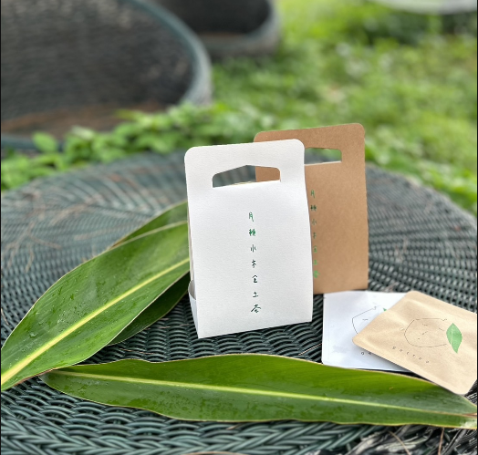
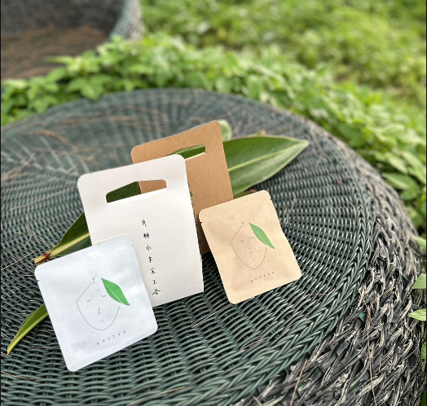
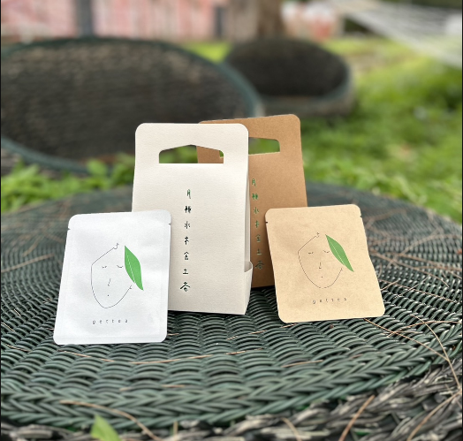
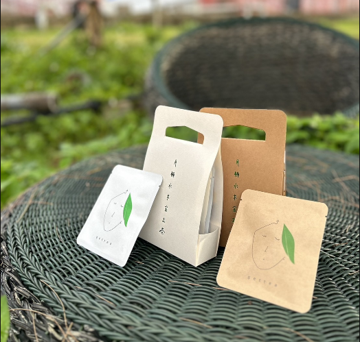
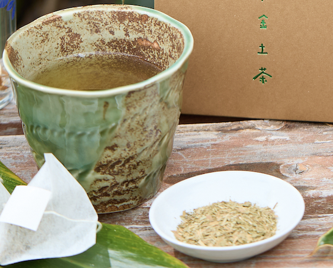

- 
- 
- 
- 
上質な月桃茶を、
妥協無くお届けします
getteaは、沖縄の豊かな自然から生まれた月桃茶を、
お客様のもとへお届けすることに情熱を傾けています。
私たちの目指すのは、ただお茶を提供することではなく、
一杯のお茶から伝わる沖縄の文化や歴史、
そして生産者の想いを感じていただくことです。
月桃茶はもっと、心地よい。
月桃茶は、日常に新たな風を吹き込む特別な一杯です。
沖縄の自然が育んだ、ユニークな風味と香りを持つ月桃茶は、日々の暮らしに彩りを加えます。
getteaでは、ただのお茶では満足しません。質の高さが、適正な価値を生み出します。
しかし、私たちの提供する月桃茶の品質は、決して裏切ることはありません。
沖縄の温暖な気候と豊かな自然環境の中で育まれる、月桃茶は日本人の味覚に合うように厳選されています。その土地土地の特性を活かし、多様な味わいを提供します。
月桃の自然な葉が放つ、繊細でフレッシュな香りに、どうぞ驚かれてください。
gettea（月桃茶）の特徴
-

Would you like tohave tea ?
月桃茶の特徴は何といってもその爽やか な香り。沖縄では馴染みのある香りです が全国的には珍しい植物なので、皆さん の五感に清涼感のある新たなそよ風をお 届けできることでしょう。
-
月桃のお茶
爽やかな香りに勝ることながらワインの 34倍のポリフェノール含まれ、美容や 健康にとっても嬉いアイテムになります。